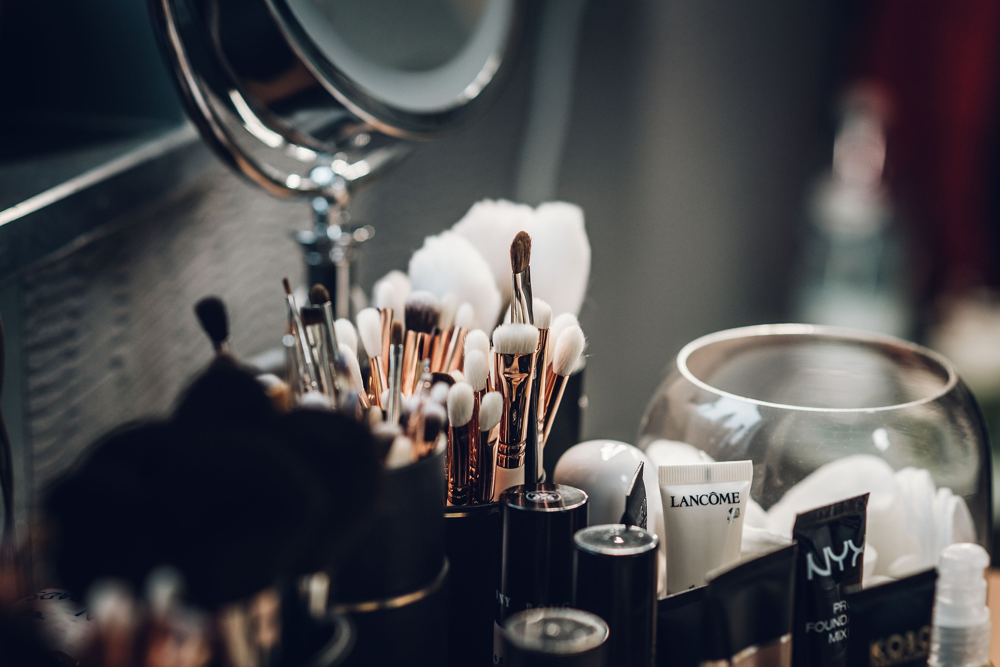

Trabalhamos com cuidados específicos para a pele jovem, ajudando a manter sua saúde, equilíbrio e beleza.
Trabalhamos com cuidados específicos para a pele jovem, ajudando a manter sua saúde, equilíbrio e beleza.

A pele jovem, naturalmente mais oleosa e propensa a acne, requer produtos oil-free para evitar obstrução dos poros. Antes da maquiagem, limpeza e protetor solar são indispensáveis. Prefira bases leves e lembre-se:menos é mais. Remover completamente a maquiagem antes de dormir é crucial para previnir inflamações e envelhecimento precoce.
Meu trabalho Trabalhamos com cuidados específicos para a pele jovem, ajudando a manter sua saúde, equilíbrio e beleza.
Preparamos cuidados especiais para a pele jovem, com tratamentos que ajudam a controlar a oleosidade, previnir acne e manter a hidratação.
Cursos de programação.